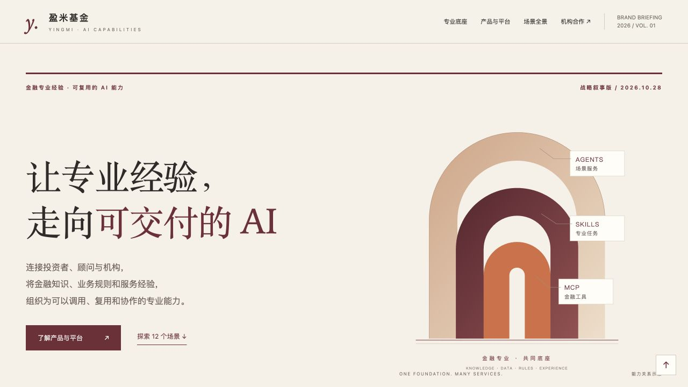
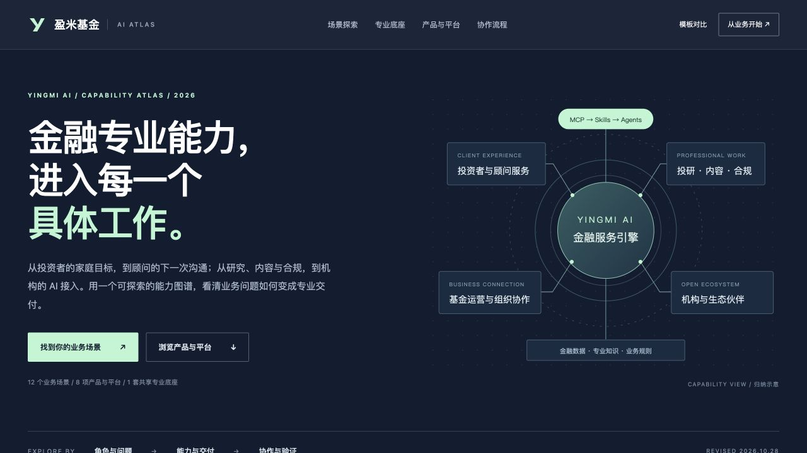

用一条完整的业务叙事，讲清盈米为什么做 AI、有哪些能力，以及如何落在服务与组织之中。
适合：高层汇报 · 对外介绍 · 机构初次交流
从企业全景走向业务理解。为高层介绍与场景交流，重新组织盈米 AI 的能力、产品、工作流程与合作起点。
两套模板均可独立阅读、手机浏览及下载。
内容基于 10 月 27 日原版，展示修订于 10 月 28 日。

用一条完整的业务叙事，讲清盈米为什么做 AI、有哪些能力，以及如何落在服务与组织之中。

从读者的角色与任务出发，交互查看场景、输入与交付，再衔接产品、流程和合作方式。
把能力介绍衔接到受众、典型任务和交付结果，让读者知道从哪里开始。
用“输入—AI处理—交付—人工确认”展开工作方式，产品不再只是名称清单。
数据保留截止日期和统计含义；产品、内部实践和建设方向分别标注。
数据沿用原版已核验的公开口径：OAP 截至 2026-10-01；AI 小顾截至 2026-09-01。模板修订日不代表经营数据更新日。流程、架构为能力归纳或示意，合作起步建议为方案设计；可用模块与服务范围以实际开通为准。查看来源与口径 · 查看原版